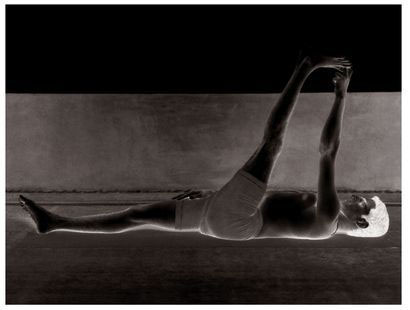
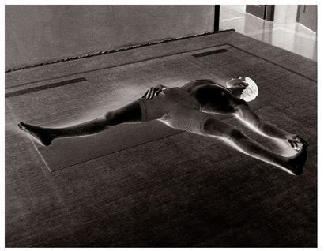
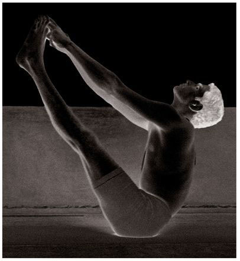

Supta Konasana has sixteen vinyasas. The 8th vinyasa is the state of the asana.
METHOD
To begin, do the first six vinyasas of the first Surya Namaskara. Then, doing puraka, as in Paschimattanasana, lie flat on the floor, legs together, and stretch the legs out tightly; this is the 7th vinyasa. Do rechaka. Then, doing puraka, lift both the legs up and, doing rechaka, bring the legs over the head, open them out wide on the floor, and hold the big toes; this is the 8th vinyasa. Next, doing puraka and without bending the legs, come up into the 9th vinyasa of Upavishta Konasana, exhale and slowly lower into the 8th vinyasa of Upavishta Konasana; this constitutes the 9th vinyasa. Then, doing puraka, lift only the head; this is the 10th vinyasa. The next vinyasas are the same as those in earlier asanas.
The state of Supta Konasana, which occurs in the 8th vinyasa, comprises lifting the legs, as in Sarvangasana [asana 32], doing rechaka and holding the legs as in Halasana [asana 33], placing the full weight of the body on the shoulders, holding the big toes with the hands, legs wide apart, and doing rechaka and puraka. While in the state, the abdomen should be drawn in completely, but not with mula bandha, or even uddiyana bandha. Aspirants should remember this.
SUPTA PADANGUSHTASANA (1ST PART)

SUPTA PADANGUSHTASANA (2ND PART)

UBHAYA PADANGUSHTASANA

BENEFITS
The benefits of Supta Konasana are the same as those for Baddha Konasana and Upavishta Konasana: the grdhrasi nadi becomes purified and the spinal column and waist become strong.